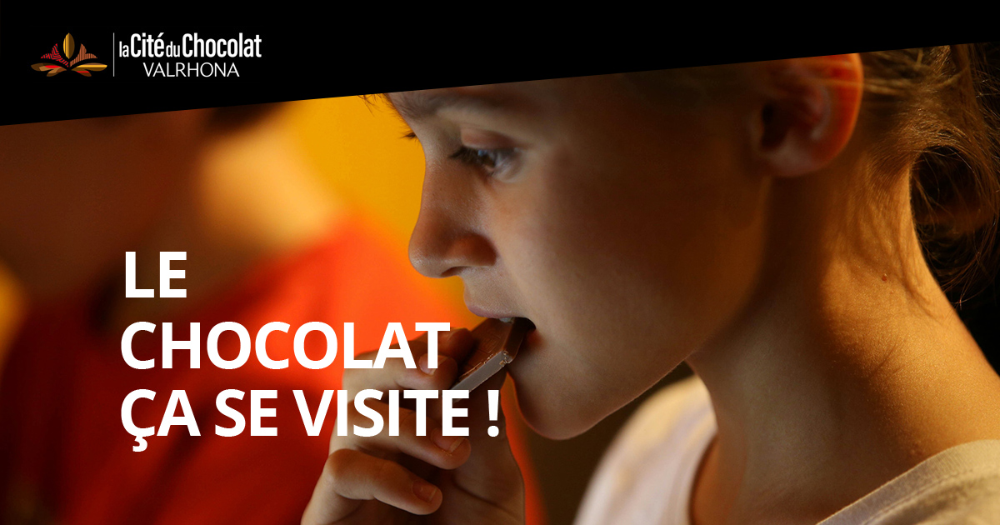
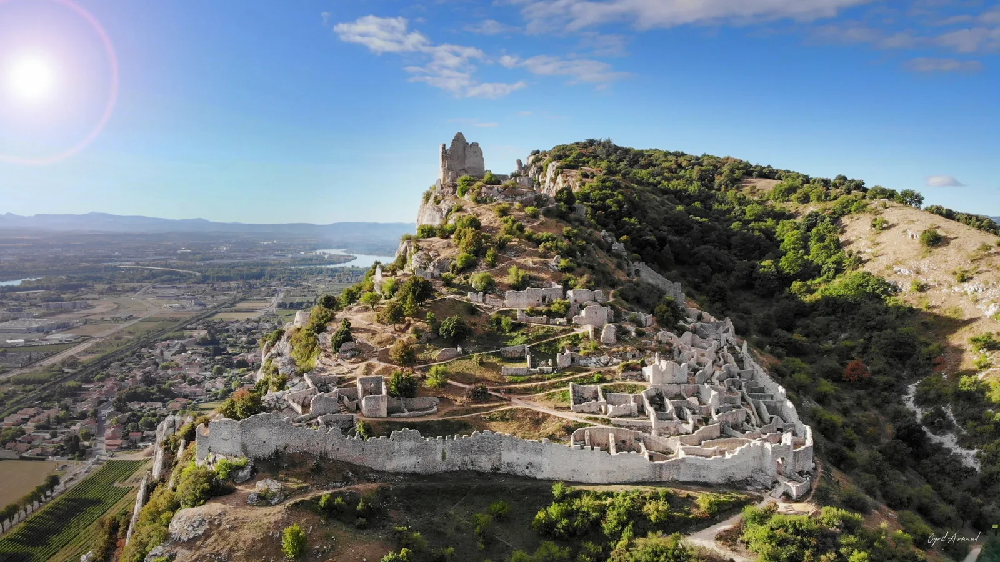
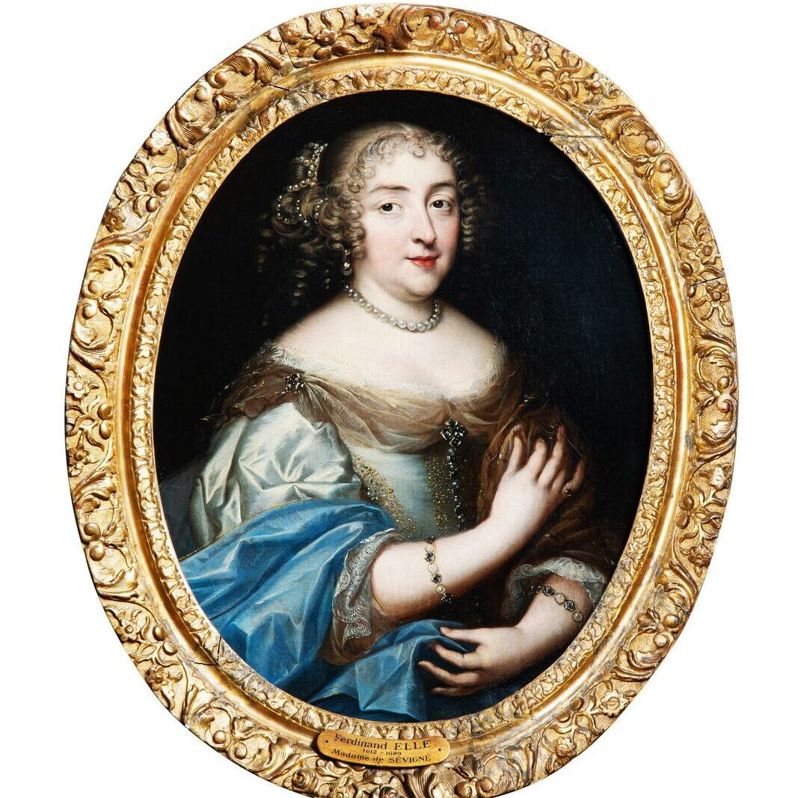
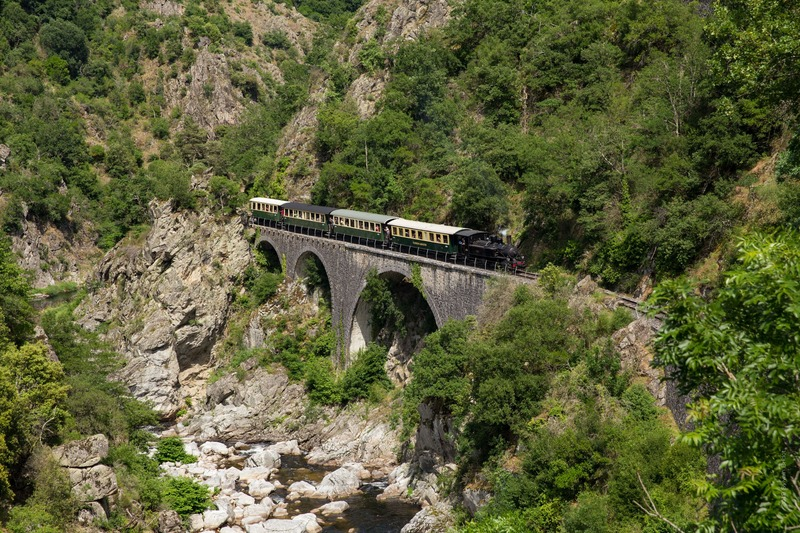

Champ de Mars
3 ha esplanade laid out 1773 — a natural balcony over the Rhône with Crussol framed across the water on clear days. [9]
Kiosque Peynet
1890 bandstand by Eugène Poitoux — Raymond Peynet sketched his famous "Amoureux" lovers here in 1942. Classified Historic Monument 1982. [8]
Vieux Valence — les côtes
Stepped medieval alleys (Saint-Martin, Saint-Estève, Sainte-Ursule, des Chapeliers, de la Voûte) that river boatmen and carters climbed to the upper town. [10]
Maison des Têtes
57 Grande Rue. Gothic-to-Renaissance pivot, 1528–1532. Facade carved with allegorical heads: Winds, Fortune, Time. [3]
Musée de Valence — Art & Archéologie
Former bishops' palace. Strong archaeological floor plus 16th–20th c. fine arts. [79]
Cathédrale Saint-Apollinaire
Volunteer-managed hours only: Thu 10–12, Sat 8:30–12 & 14–17, Sun 9–11. [1]
Adjacent Pendentif (1548 funerary monument) — free, one of France's first listed MH (1840). [2]

Hermitage Hill Walk
45 min from Taurobole sq. up terraced granite vines to Chapelle Saint-Christophe at 329 m. Drôme valley panorama. [15]
Tasting: Cave de Tain
Co-op covering all 5 northern Rhône crus (Crozes-Hermitage, Hermitage, Saint-Joseph, Saint-Péray, Cornas). 45-min guided visit + 5 wines. [23]

Cité du Chocolat Valrhona
Rainy-morning anchor — interactive tasting museum at the Valrhona factory. [16]
Marc Seguin Footbridge
Oldest suspension bridge in France still in service (1847–49). The Seguin brothers built the world's first wire-cable suspension bridge here in 1825. [17] [18]
Château-Musée de Tournon
Medieval castle on the right bank. May–June: afternoons only 14–18. [19]
Also: M. Chapoutier
Walk-in tasting at 18 av. Dr Paul Durand, Tain. No reservation needed. [22]

Château de Crussol
Ruined castle on the limestone cliff across the Rhône — visible from the city. ~4.8 km loop, 210 m climb. [26]

Château de Grignan ★ 2026
Année Sévigné — 400th anniversary of Madame de Sévigné's birth. Full event programme all year. [58]
Tour de Crest
Tallest medieval keep in France — 52 m. Built 13th c., state prison 17th–mid 19th c. Vertical drama. [56]

Train de l'Ardèche
Steam train into the Gorges du Doux. Departs Tournon 10:15, returns 17:00 — full-day. Kid-friendly. [20]
Romans-sur-Isère
Shoe museum (16,500 pieces, 4,000 years) + Marques Avenue outlets (80+ stores, 30% off) + free Cité de la Raviole tasting. [51]
Food & drink — the four Drôme icons + best market
🥐 Suisse de Valence
Soldier-shaped orange-blossom shortbread. Created 1799 to honour the Swiss Guards who accompanied Pope Pius VI's body after he died in Valence. [37]
🍝 La Ravioline
Ravioles du Dauphiné — tiny Comté & herb pasta pillows. Label Rouge + IGP since 2009. [39]
🧀 Picodon AOP
Small firm raw-goat cheese from Drôme & Ardèche. AOP 1983. Name from Provençal picaoudou — "small spicy cheese." 138 producers. [43]
🛒 Saturday Market
Place des Clercs, 7am–2pm year-round, ~100 stalls spilling toward the cathedral. [47]
🍊 Pogne de Romans
Crown brioche perfumed with orange blossom, medieval Easter origin. [41]
⚠ Watch for these before you go
Musée fermé lun + mar
Closed Monday AND Tuesday. Plan the museum on a Wednesday-to-Sunday day or you'll get a locked door. [79]
No lavender in early June
Drôme provençale lavandin only starts blooming mid-June (plain) to mid-July (altitude). Fields around Grignan are still green the first weekend of June. [66] [65]
Forêt de Saoû — partial closure
Sections closed 15 May–15 July to protect chamois during calving — early-June visit is partially impacted. Check the current zone map. [64]
Mauves producers — book weeks ahead
Gonon, Chave, Coursodon, Gripa ("Gang of Mauves" Saint-Joseph) almost never walk-in. Write to the domaine weeks in advance. [24]
A defensible two-day shape — arrive Friday evening, leave Sunday evening
Sat morning
- Saturday market, Place des Clercs
- Vieux Valence côtes walking loop
- Maison des Têtes courtyard (free)
- Musée de Valence (Wed–Sun only)
Sat afternoon
- Cross to Crussol (~10 min drive)
- ~4.8 km loop, 210 m, 1.5–2 h
- Go early — exposed limestone
- Back: Suisse at Maison Nivon
Sat evening — ★★★
- Restaurant Pic, Anne-Sophie Pic
- 285 avenue Victor Hugo
- €280–380 pp excl. wine
- Book months in advance
Sunday — Hermitage
- TER to Tain-l'Hermitage (10 min)
- Cité du Chocolat then hill walk
- Cave de Tain tasting (book ahead)
- Marc Seguin bridge → Tournon château